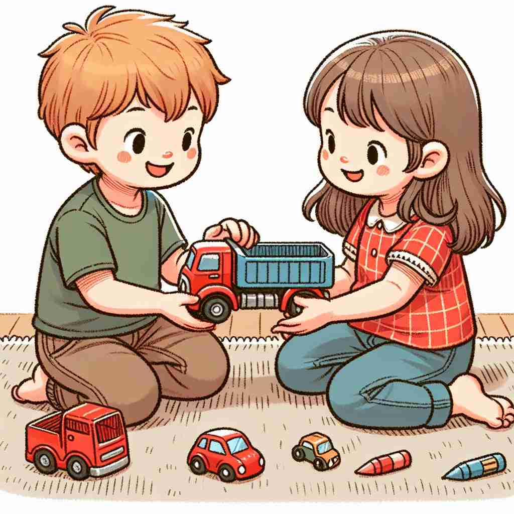

💬 The woman likes to walk with a dog in the park.

💬 She enjoys her coffee with a cup.
💬 The children are playing with toys on the floor.

💬 The children love to play with friends.
🔈 [wɪð]
🗝️ prep. accompanied by or in the company of
🖼️ 想象一个聚会场景，玛丽走进大厅，身边跟着她最好的朋友。她们笑着，分享彼此的秘密，这体现了 'with' 表示与某人结伴的含义。
🔍 想象'with'是一根无形的绳子，连接着两个事物。这个连接可以是物理上的陪伴，也可以是抽象的关系。无论是工具、关系、对抗还是态度，都可以用这根'绳子'来联想。这个核心概念贯穿了'with'的各种用法，帮助你更容易记住和理解它的多重含义。
💬 The woman likes to walk with a dog in the park.
💬 She enjoys her coffee with a cup.
💬 The children are playing with toys on the floor.
💬 The children love to play with friends.
🌳 这是一个介词，来源于古英语 'wiþ'，通常表示伴随、连接或使用工具/方式的关系。
💡 可以通过联想 'with' 表示的一种“伴随某物或人”的状态来记忆，将其替换为中文的'和'、'用'，容易理解作为一种连接关系。
🗝️ prep. having or possessing
🖼️ 在一个繁忙的咖啡馆里，一位顾客拿着一杯加满奶油的咖啡。这种满溢的幸福展示了 'with' 表示拥有的含义。
💬 The man with the red hat is my uncle.
❓ 伴随某物就如同拥有它
🗝️ prep. by means of or using
🖼️ 在一个现代化的厨房里，主厨正用锋利的刀精准地切割蔬菜。'with' 在这里强调使用某种工具进行的动作。
💬 She cut the bread with a knife.
❓ 工具或方法伴随着行为的进行
🗝️ prep. in relation to
🖼️ 在公司会议中，经理在讨论与市场趋势有关的数据。这说明了 'with' 用于表示关系或关联的意思。
💬 I'm having trouble with my computer.
❓ 表示与某事物相关或相联系
🗝️ prep. in opposition to
🖼️ 在篮球赛场上，两个强队正在激烈对抗。'with' 在此表示双方对峙的动态。
💬 The team will compete with last year's champions.
❓ 对抗也是一种特殊的伴随关系
🗝️ prep. despite
🖼️ 在一个阴雨天里，人们仍然拿着伞在公园里散步，享受雨中的宁静，这展示了 'with' 表示尽管如此的用法。
💬 With all his wealth, he was still unhappy.
❓ 某种情况伴随着主要事件发生
🗝️ prep. in the same direction as
🖼️ 在一条河流之上，一艘船顺流而下。风和水流的方向一致，这体现了 'with' 表示同向的含义。
💬 The leaves were blowing with the wind.
❓ 表示方向或态度的一致性